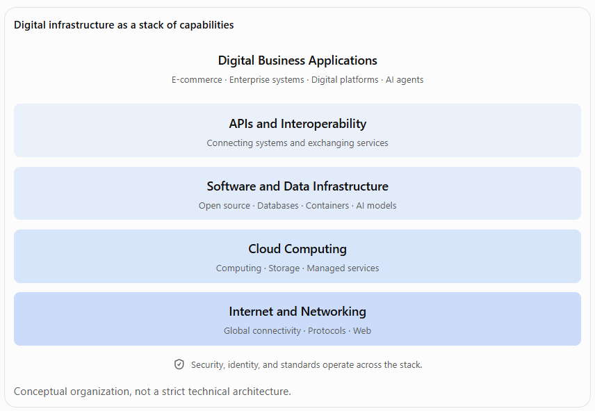
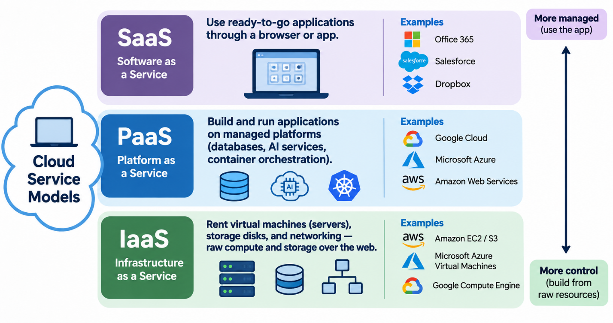
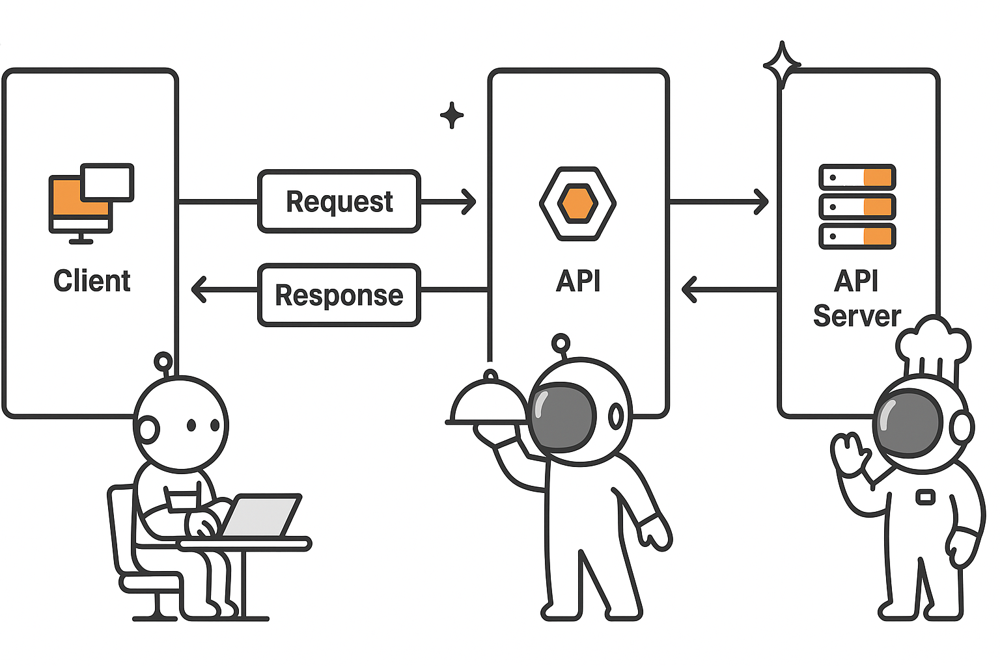

6.1 Digital Infrastructure: The Internet, Cloud, APIs, and Open Source
Imagine an entrepreneur who wants to launch an online service. She doesn’t need to build her own data center, write every line of software, or carve fiber cable across continents. Instead, she taps into a digital infrastructure that is already in place: the global Internet for connectivity, cloud platforms for computing power, open-source software as reusable building blocks, and APIs that let her stitch services together. This layered stack of capabilities lets businesses roll out powerful digital applications with far less upfront investment. In effect, digital infrastructure allows companies to innovate quickly and scale without reinventing the wheel. As one expert puts it, “The internet has become the central operating layer of the modern economy”. Connectivity and shared services have become the plumbing of business, making it possible for a local startup to sell to customers halfway around the world.
The big idea is this: digital infrastructure is like a series of stacked layers, each building on the ones below it (Figure 6.1). At the base is the Internet itself – a vast network that connects people, data, and devices worldwide. Above that sits the cloud – on-demand servers, storage, and managed services. Built on top of cloud and network layers are shared software and data tools (including databases, analytics, and container platforms). The next layer up is APIs, the glue that lets different software systems talk to each other and tap into services. And at the top are the digital business applications and platforms that customers see and use. Security, identity, and standards (not shown) cut across all layers, ensuring trust and interoperability. Together, these layers reduce the cost and complexity of building software: companies can buy or rent many pieces of the stack rather than building them.

Show long description
The figure illustrates digital infrastructure as a stack of five interconnected layers of technological capabilities that support modern digital businesses. Each layer provides capabilities that can be used by the layers above it, allowing organizations to build sophisticated digital products and services without developing every underlying technology themselves.
The layers are arranged vertically, with foundational infrastructure at the bottom and business applications at the top. The four lower layers appear in progressively lighter shades of blue from bottom to top. The top layer has a white background. The colors distinguish the layers but do not indicate differences in importance.
Reading from the bottom upward:
- Internet and Networking: The foundational layer provides global connectivity through communication networks, protocols, and the World Wide Web. It allows computers, devices, applications, and organizations to exchange information across geographic boundaries. This connectivity supports all the other layers of digital infrastructure.
- Cloud Computing: The second layer provides computing resources, storage, and managed services. Cloud computing allows organizations to access technological capabilities on demand rather than purchasing and maintaining all the underlying physical infrastructure themselves. Businesses can expand or reduce their computing resources as their needs change.
- Software and Data Infrastructure: The middle layer includes open-source software, databases, containers, and AI models. These technologies provide reusable building blocks for developing and operating digital systems. Open-source software enables organizations to build on shared technological foundations, while databases, containers, and AI models support information management, application deployment, and intelligent functionality.
- APIs and Interoperability: The fourth layer enables different software systems to communicate and exchange services. Application programming interfaces, or APIs, provide standardized ways for applications to request information or functionality from other systems. This allows organizations to combine internal systems with external services and connect technologies developed by different providers.
- Digital Business Applications: The top layer represents the applications and services that organizations use to conduct business and create value. Examples include e-commerce, enterprise systems, digital platforms, and AI agents. These applications draw on capabilities provided by the underlying layers to support business operations, customer interactions, automation, and new business models.
Beneath the stack, a shield icon accompanies the statement, “Security, identity, and standards operate across the stack.” This indicates that these capabilities are not confined to any single layer. Instead, they support the reliable operation, controlled access, and interoperability of digital infrastructure throughout the entire system.
At the bottom of the figure, a note states, “Conceptual organization, not a strict technical architecture.” This qualification is important because the layers do not always operate in a rigid sequence. Software may run outside the cloud, APIs can connect systems at multiple layers, and open-source technologies may be used throughout the stack. The diagram is intended to illustrate how complementary capabilities work together rather than prescribe a specific technical design.
The figure's central message is that digital infrastructure enables organizations to assemble and reuse technological capabilities rather than build every component from scratch. The Internet provides connectivity, cloud computing supplies scalable resources, software and data infrastructure offer reusable components, and APIs connect these capabilities into functioning business applications.
Key takeaway: Modern digital businesses are built on interconnected layers of shared infrastructure. Understanding these layers helps managers evaluate technology investments, make build-versus-buy decisions, manage dependencies, and recognize how digital infrastructure lowers barriers to innovation and enables new business models.
The Internet (bottom layer) provides global connectivity. Cloud computing (second layer) supplies on-demand servers, storage, and managed services. Higher layers include software and data infrastructure (databases, containers, analytics), APIs (the interfaces that connect systems), and business applications (top layer). Cross-cutting concerns like security, identity, and open standards span every layer.
Digital infrastructure is what enables modern digital businesses, platforms, and services. Whether it’s launching a new app, automating a supply chain, or rolling out an AI agent, managers today expect building blocks to be available off the shelf. They care about these layers because they decide how fast a company can innovate, how agile it is, and how cost-effectively it operates. In the sections that follow, we’ll unpack each layer – the Internet and Web, Cloud Computing, APIs, and Open Source Software – to understand what they are, why they matter for business, and how they work in practice (including the role of AI in each). Along the way we’ll use real-world examples to make the ideas concrete.
The Internet and the Web
What is the Internet (and the Web)?
The Internet is the global network of networks – essentially a huge system of computers and devices interconnected by physical cables, satellites, and radio. It uses common communication protocols (like TCP/IP and DNS) so that any connected device can exchange data with any other. The World Wide Web is one of the most visible services running on the Internet: it’s a system of linked documents and applications accessed via web browsers (using the HTTP protocol). But the Internet also supports email, video calls, file sharing, streaming media, and many other services beyond the Web.
To keep it simple: think of the Internet as the digital highway system, and the Web as a collection of websites you can visit on that highway. The Internet provides the connectivity (roads, cables, wireless networks), and the Web and other services are the “destinations” (websites, apps, services) you reach via standard rules (protocols). It’s important to note that you can have applications (like email or IoT devices) that use the Internet without involving the Web at all.
Why It Matters for Business
Connectivity is nothing short of transformative for businesses. With 6.18 billion people online in 2026, the Internet now reaches most of the world (including an astonishing 93% penetration in high-income countries). That means every company, from the corner store to the global bank, can potentially reach millions of customers, partners, and employees over these networks. In practical terms, the Internet broke down distance and time barriers. A boutique in Boston can sell to a customer in Berlin; a manufacturer in Taiwan can coordinate with suppliers in Mexico in real time. The global reach expands markets dramatically.
The Internet also changed how products and services are delivered. For instance, streaming, e-commerce, cloud services, online education, and telemedicine all rely on Internet infrastructure. When COVID-19 pushed businesses online, companies with solid Internet-based channels could survive or even thrive, while others struggled to adapt. Today, digital customers expect always-on availability, and the Internet makes that possible.
From a competitive standpoint, a fast, reliable Internet foundation is table stakes. Poor connectivity or outdated network designs can cripple a business (imagine frequent website outages or slow transaction processing). Conversely, companies that leverage modern Internet technologies can run global teams, gather analytics, and pivot to new models (for example, shifting a portion of retail sales to online channels). In short, if the Internet layer falters, everything above it suffers.
How the Internet Works (at a High Level)
Underneath the hood, the Internet depends on many protocols and hardware: fiber cables under the ocean, routers that forward packets, cellular towers for mobile, and services like DNS (which turns names like “example.com” into IP addresses). Routers and switches handle traffic, ensuring data finds its way across paths that may span continents. Key protocols include TCP/IP (for reliable transport of data), HTTP (the basis of the Web), and DNS (for name resolution).
For managers, the important point is that the Internet relies on shared resources and standards. No single company owns the Internet – it’s a cooperative of networks. That is why standards (like those from the IETF and W3C) are so important: they make sure that a website hosted in one country can be reached by a smartphone on another network, or that your customer’s data in the cloud is accessible from anywhere with the right credentials.
The Web: a Key Service on the Internet
The Web (WWW) is the layer of Internet meant for hyperlinked documents and applications. It uses HTTP/HTTPS protocols. Businesses care about the Web because virtually any online customer interaction (shopping, banking, booking travel, etc.) happens through web interfaces or mobile apps that connect via web APIs. Think of it as the storefront layer on top of the Internet infrastructure. When a manager hears “website” or “web app,” it’s the Web layer on top of the network.
Technically, the Web runs on servers (often virtual machines or containers in the cloud) that store files and databases, serving them to clients (browsers). But from a business view, it’s the “face” of digital offerings. Companies invest in websites and web platforms to reach customers, and they worry about web performance, security (HTTPS, certificates), content delivery networks (CDNs to speed up global access), and so on. These are all ways to optimize the Web layer’s use of the underlying Internet.
Internet and Artificial Intelligence
AI both depends on and augments the Internet layer. On one hand, modern AI systems rely on vast amounts of data from across the network. Data centers train models on data often collected via the Internet, and then AI-powered services are delivered over the same networks. For example, when a smartphone translates speech using a cloud AI service, it’s sending your voice (data) over the Internet to a server, and getting back a translation.
On the other hand, AI is making networks “smarter.” For instance, content delivery networks (CDNs) use AI to predict traffic and cache content closer to users. AI is also embedded in network management (for auto-scaling, detecting cyber threats, or optimizing traffic flows). A recent analysis notes that “artificial intelligence is turning the network from an information system into an action system”, meaning networks are now actively optimizing themselves and supporting automated decision-making.
Cloud Computing
What is Cloud Computing?
Cloud computing refers to on-demand access to computing resources (servers, storage, databases, software platforms) over the Internet. Instead of buying and managing physical hardware, companies rent these resources from providers like Amazon Web Services (AWS), Microsoft Azure, or Google Cloud. These providers operate vast data centers (“hyperscale” facilities with thousands of machines). The key cloud models are:
- Infrastructure as a Service (IaaS): Renting virtual machines (servers), storage disks, and networking. Think of it as getting raw compute and storage over the web.
- Platform as a Service (PaaS): Building applications on managed platforms (databases, AI services, container orchestration) without worrying about the underlying servers.
- Software as a Service (SaaS): Using fully managed applications (like Office 365, Salesforce, or Dropbox) through a browser or app.
From a business perspective, cloud computing means treating IT as an on-demand service rather than a fixed asset. You pay-as-you-go (operational expense rather than big capital expense), and you can spin up or tear down resources quickly as needs change.

Show long description
The figure compares three cloud computing service models: Software as a Service (SaaS), Platform as a Service (PaaS), and Infrastructure as a Service (IaaS). It illustrates how these models differ in the resources provided by the cloud provider, the responsibilities of the customer, and the degree of control customers have over the computing environment.
The figure is organized into three horizontal sections, with SaaS at the top, PaaS in the middle, and IaaS at the bottom.
Software as a Service (SaaS) is shown in purple at the top. SaaS provides fully managed applications that customers access through a web browser or app. Customers use the software without managing the underlying infrastructure, operating systems, or application platform. A laptop displaying application icons represents this model. Examples include Microsoft Office 365, Salesforce, and Dropbox.
Platform as a Service (PaaS) is shown in blue in the middle. PaaS provides managed environments for building, deploying, and running applications. The cloud provider manages much of the underlying infrastructure and platform, allowing developers to concentrate on application development. Icons representing a database, artificial intelligence services, and container orchestration illustrate capabilities commonly available through managed cloud platforms. The figure identifies Google Cloud, Microsoft Azure, and Amazon Web Services as providers of these capabilities.
Infrastructure as a Service (IaaS) is shown in green at the bottom. IaaS provides fundamental computing resources, including virtual machines, storage, and networking, delivered over the internet. Customers have greater responsibility for configuring and managing operating systems, software, and applications running on these resources. Icons representing servers, storage disks, and network connections illustrate the infrastructure components. Examples include Amazon EC2 and S3, Microsoft Azure Virtual Machines, and Google Compute Engine.
On the right side of the figure, a vertical double-headed arrow illustrates the relationship between provider management and customer control. The top is labeled "More managed (use the app)," while the bottom is labeled "More control (build from raw resources)." This emphasizes that SaaS generally requires the least infrastructure management by the customer, PaaS offers an intermediate level of management and flexibility, and IaaS provides greater control over the computing environment while requiring more customer management.
The central takeaway is that cloud computing is not a single type of service. Organizations can choose among ready-to-use applications, managed application-development platforms, and fundamental computing infrastructure. The appropriate model depends on how much control, customization, and operational responsibility the organization needs or wishes to retain.
Why It Matters for Business
Cloud computing changes the economics of IT by giving businesses access to computing resources that can expand or contract with demand. Its defining advantage is elasticity: the ability to automatically increase computing capacity when demand rises and reduce it when demand falls. Instead of purchasing enough servers to handle the busiest day of the year, companies can adjust resources to match their actual needs.
Consider an online retailer preparing for Black Friday. Under a traditional IT model, the company might purchase enough servers to handle its anticipated peak traffic. Those servers would then sit largely idle for much of the year. With cloud computing, the retailer can add computing capacity as shoppers arrive and release that capacity when traffic returns to normal. Elasticity allows companies to respond to demand without permanently paying for peak capacity.
Elasticity is related to, but distinct from, scalability. Scalability is a system's ability to handle increasing workloads by adding resources. Elasticity goes further by adjusting those resources dynamically as demand changes in either direction. A system can be scalable without being elastic. For example, a company might be able to add servers manually, but still struggle to reduce capacity quickly when demand declines.
For managers, cloud computing offers several important business advantages:
- Elasticity and Cost Efficiency: Computing resources can expand during demand spikes and contract during quieter periods. Companies can avoid investing in excess capacity that sits idle, although savings depend on how effectively cloud usage is managed.
- Speed and Agility: New applications and services can be deployed in minutes rather than waiting weeks to purchase and install hardware. Teams can experiment with new ideas, test products, and respond more quickly to market opportunities.
- Lower Upfront Investment: Companies can access enterprise-scale infrastructure without building their own data centers. This reduces the capital required to launch a digital business and allows startups to use many of the same underlying technologies as large enterprises.
- Global Reach: Major cloud providers operate data centers in multiple geographic regions. Businesses can deploy applications closer to customers to reduce delays, known as latency, while selecting locations that support applicable data residency requirements.
- Focus on Core Business: Rather than spending time maintaining physical servers, power systems, and cooling equipment, organizations can devote more resources to developing products, serving customers, and improving business processes.
These advantages can change competitive dynamics. A small startup no longer needs to make a massive infrastructure investment before testing whether customers want its product. A growing company can accommodate sudden popularity without rebuilding its entire technology environment. And an established enterprise can launch digital services in new markets without first constructing local data centers.
Cloud computing also changes financial decision-making. Traditional IT infrastructure often requires substantial capital expenditures (CapEx)—investments in equipment purchased upfront. Cloud services frequently shift these costs toward operating expenditures (OpEx), with spending tied more closely to consumption. However, pay-as-you-go pricing does not automatically mean lower costs. Poorly managed resources, unnecessary capacity, and unpredictable usage can generate substantial bills.
The strategic benefit is therefore not simply that cloud computing is cheaper. It is that cloud computing makes computing capacity more flexible, allowing firms to align technology resources with business demand.
For managers, this flexibility can translate into faster innovation, reduced barriers to entry, and greater responsiveness to customers. In a competitive environment where demand can change overnight, the ability to expand or contract digital operations quickly can be as valuable as the technology itself.
Trade-offs and Considerations
Cloud isn’t a free lunch. Managers must weigh trade-offs:
- Vendor Lock-in: Moving data and apps to a cloud can make it harder to switch providers later. Once you use a proprietary service (say, AWS Lambda functions or Google BigQuery), porting to another cloud or on-premises environment may be hard.
- Cost Management: Pay-as-you-go is cheaper for occasional or unpredictable loads, but costs can creep up if not managed. Interestingly, one study found that while 67% of companies saw significant cost reductions from cloud in 2024, only 61% did in 2025. This signals that without good financial oversight (FinOps), cloud bills can grow (perhaps because new services or higher usage offset earlier savings).
- Security and Compliance: Companies must ensure their data is safe in the cloud. While providers invest heavily in security, the customer is usually responsible for configuring it correctly. Many organizations now see “cloud security” as a basic requirement. In fact, cloud and data sovereignty have become strategic concerns in Europe, where 58% of companies see a “sovereign cloud” (locally controlled cloud) as a must-have.
- Complexity of Multi-Cloud: Managing multiple cloud vendors (to avoid lock-in or use best-of-breed services) adds complexity. As one report notes, 87% of IT leaders now orchestrate multiple providers in a multi-cloud approach, which can complicate operations and require new skills.
How Cloud Works (in Practice)
Technically, cloud providers run immense data centers with virtualization or container systems that allow dozens or hundreds of “instances” to run on each physical server. When you start a virtual machine (VM) on AWS or Azure, it is essentially a slice of someone’s physical server. Storage systems span many disks so that your files stay available if a disk fails. Networks connect your virtual machines to each other and to the Internet.
Cloud providers also offer managed services. For example, instead of installing your own database software on a VM, you might use a managed database service (like Amazon RDS) which handles backups and replication for you. Or you might use a serverless compute service (like AWS Lambda) where you just upload code and the cloud automatically runs it in response to events.
The key business idea is that the infrastructure is abstracted away. You configure resources through web consoles or APIs, and you pay for usage (like CPU hours, storage GBs, or number of requests). This elasticity means you can easily prototype new ideas: try a new digital service one month, and if it flops, turn it off immediately. Or if it takes off, spin it up massively.
Cloud and Artificial Intelligence
Cloud computing and AI have become intertwined. Cloud providers have added specialized hardware (like GPUs and TPUs) and managed AI platforms, because AI workloads need massive computation. For instance, companies often “rent” large models or train their own models in the cloud. In practice, 92% of organizations that use cloud now obtain modern AI solutions from the same cloud providers. This means big cloud vendors are effectively the main hosts of advanced AI services (vision APIs, language models, data lakes, etc.).
Managers should note that AI ambitions often push more workloads to the cloud. Large-scale AI training or inference is hard to run on in-house servers. Cloud-based AI means pay-per-use GPUs and pre-built AI services, which many companies now leverage rather than building private AI infrastructure. For example, a retail company might use a cloud-based image-recognition API to analyze customer photos, without needing its own machine-learning team or servers.
Conversely, AI is helping cloud operations. Cloud providers use AI tools to optimize data center efficiency, predict equipment failures, and improve security. Even customer support in cloud often includes AI chatbots or recommendation systems. In sum, cloud makes AI accessible to more firms, and AI makes cloud services smarter and more efficient.
APIs (Application Programming Interfaces)
What is an API?
An API (Application Programming Interface) is a set of rules and tools that lets different software systems communicate. In simple terms, an API is like a contract: one program (the client) calls on another program (the server) by sending a request in a defined format, and then the server returns a response. The request might ask for data (“get the current stock price”) or ask an action (“send a text message”). APIs can be simple (an HTTP request to a web service) or complex (Java APIs between modules), but the core idea is the same: they expose functionality or data of a system in a controlled way.
For example, a weather service might offer a Weather API: a developer can write code that says “getWeather(city=Seattle)”, and the API returns today’s forecast. The actual weather data lives on the provider’s servers; the API is the interface that lets your app request it. APIs can be exposed over the Internet (public or partner APIs), or used internally within a company’s systems.

Show long description
The figure illustrates how an Application Programming Interface (API) enables communication between a client application and a server through a request-and-response process. The diagram is arranged horizontally, with three main components: a client on the left, an API in the center, and an API server on the right.
The client, represented by a computer icon and a cartoon robot working at a laptop, is the application or system initiating communication. The client sends a request to the API when it needs information or wants to perform an action. A right-pointing arrow labeled "Request" connects the client to the API, indicating the direction of the outgoing communication.
The API, represented by a hexagonal symbol and a cartoon robot holding a serving tray, provides a defined interface through which the client can interact with the server. The API specifies how requests must be structured, what operations are available, and how responses are returned. The serving robot visually reinforces the idea that an API acts as an intermediary, receiving requests and facilitating access to services or information.
The API server, represented by a stack of server icons and a cartoon robot wearing a chef's hat, processes incoming requests. Depending on the request, the server might retrieve information from a database, perform a calculation, execute a business operation, or interact with other systems. The chef's hat reinforces the analogy of a restaurant kitchen, where requested services are prepared before being delivered.
Two sets of arrows illustrate the flow of communication. The upper arrows point from left to right, showing a request traveling from the client through the API to the server. The lower arrows point from right to left, indicating that the server's response travels back through the API to the client. The response might contain requested data, confirmation that an operation was completed, or an error message if the request could not be fulfilled.
The illustration uses a simple black-and-white design with orange accents on the computer, API symbol, and server icons. The three cartoon robots make the technical process more approachable by presenting the client as a customer, the API as a server or waiter, and the API server as a chef preparing the requested service.
The central takeaway is that APIs allow software applications to communicate through defined interfaces without requiring the requesting application to understand the internal workings of the server. The client needs to know how to make a valid request and interpret the response, while the server handles the underlying processing. This separation enables organizations to connect applications, exchange data, automate business processes, and integrate services developed by different providers.
Why It Matters for Business
APIs are like the glue of the digital economy. They let businesses compose functionality from different sources rather than building every piece themselves. This has several business implications:
- Rapid Integration: Instead of coding from scratch, companies can call existing services. For instance, a startup can integrate Google Maps (location data), Stripe (payments), or social login (Facebook/Google auth) via APIs. This dramatically speeds development. As one AWS guide notes, APIs “increase development speed because each functionality doesn’t have to be written from scratch”.
- New Business Models: APIs enable platform thinking. A retailer, for example, can open a product catalog API to its partners (suppliers or affiliates) so they can directly access inventory data. Or a bank can expose payment APIs, earning fees when other businesses use them. Amazon, eBay, and other marketplaces owe much of their power to rich APIs that allow developers to build on their platforms.
- Scalability and Collaboration: With APIs, internal teams can work in parallel. One team can improve the inventory system’s API while another builds the website; as long as they agree on the interface, they stay in sync. Teams can also consume APIs from each other’s systems, promoting reuse and consistency.
- Ecosystems and Partnerships: APIs let firms connect with external partners seamlessly. A logistics company might offer an API to track shipments, allowing its clients to embed tracking on their own sites. Or consider Fintech: many startups offer Banking-as-a-Service APIs to integrate account services into other apps. An API partner can be both a customer and a collaborator.
In short, executives see APIs as strategic. Studies find that a large majority of IT leaders view APIs as essential to their business strategy (one stat from industry reports claims 98% agree, though the number can vary by survey). The “API economy” is already worth trillions of dollars, encompassing everything from social media interactions to financial transactions (some estimates value it at over $2 trillion globally). The main point: if a firm wants to move fast and leverage external innovation, APIs are indispensable tools.
How APIs Work (at a Glance)
Most modern APIs on the web are RESTful APIs over HTTP (though others like SOAP exist). To use an API, a developer typically:
- Registers for a key or credentials (especially for public APIs).
- Sends a request to a specific URL (the API endpoint) with the required parameters.
- Receives a response, often in JSON format, which their application parses and uses.
For example, a travel app might make an HTTP GET request like https://api.example.com/flights?origin=SFO&dest=JFK&date=2026-12-01, and get back flight data in JSON. Behind the scenes, the airline’s API servers handle this query and return results. The app’s code then displays the options to the user.
Key technical points:
- Endpoints: The specific URLs (and methods like GET/POST) define what action the API performs.
- Data Format: Most modern APIs use JSON or XML to structure data, making it language-agnostic.
- Authentication: APIs often require tokens or keys to ensure only authorized clients use them, especially for paid services.
- Versioning: APIs may have versioned endpoints (e.g., /v1/resource) so developers can upgrade over time without breaking old clients.
The upshot for business: APIs make software components modular. You can treat a service (like “payments” or “maps”) as a black box as long as it has a reliable API. This modular approach lowers risk – you buy or build one piece at a time.
APIs and Artificial Intelligence
APIs play a crucial role in the AI era. Many AI platforms are accessed via APIs. For example, if a company wants to use a large language model (LLM) for customer service, it might call an AI-as-a-service API (like OpenAI’s or Google’s) rather than hosting its own model. This allows even small businesses to leverage cutting-edge AI: they send the user’s query to the model API and get a response back, all over the network.
Conversely, AI is enriching APIs themselves. Many services now offer intelligent features through APIs: image recognition, speech-to-text, translation, sentiment analysis, and more. A marketing app might call a cloud AI API to analyze customer feedback, or a financial tool might use machine-learning models via API. Thus, AI capabilities are amplifying what APIs can provide. In effect, APIs have become delivery vehicles for AI features, democratizing access to sophisticated intelligence.
Open-Source Software
What is Open Source Software?
Open-source software refers to programs whose source code is publicly available to use, modify, and distribute. “Source code” is the human-readable instructions that developers write. An open source license legally grants anyone the right to inspect and change that code. Popular examples include the Linux operating system, the Apache web server, the Python programming language, and countless libraries and tools.
Open-source projects range from small scripts to massive platforms. They are typically developed by communities: sometimes hundreds or thousands of contributors around the world. Companies, universities, and individuals all participate. Notably, open source has become dominant in areas like cloud infrastructure and AI frameworks (for example, the TensorFlow and PyTorch libraries for machine learning are open source).
Why It Matters for Business
Open-source software has a huge influence on how businesses build technology today. Key benefits include:
- Cost Savings: Many open source tools are free to use. A company doesn’t pay licensing fees for Linux, or PostgreSQL (open source database), or TensorFlow. This can save millions versus proprietary equivalents. Of course, there may still be costs for support or customization, but the software itself is without licensing cost.
- Innovation and Collaboration: Open source code is often at the cutting edge. Since anyone can contribute, innovations spread quickly. For example, big companies often release their research as open source (Google’s Kubernetes or Facebook’s Presto query engine) and the whole industry benefits. By using open source, companies tap into a global R&D effort. Developers don’t need to start from zero; they can build on established, battle-tested components.
- Avoiding Vendor Lock-In: With open source, the customer has more control. If a company uses an open source database, it is not tied to a single vendor’s pricing and roadmap – the company (or anyone in community) can modify the code if needed. There’s a choice of commercial support providers. This flexibility is strategic.
- Talent and Recruitment: Developers often prefer working with modern open source tools. If your engineering team can adopt popular open source stacks (like Linux, Docker, or React), it may be easier to hire talent.
- Security and Transparency: The ability to inspect source code means bugs and vulnerabilities are often found by community review quickly. Many organizations feel safer knowing they can audit the code running in their infrastructure.
Of course, there are trade-offs. Managers should be aware of licensing obligations (some open source licenses require you to release your own code if you distribute a product), and that open source may not come with “official” support unless you pay for it. Still, the trend is clear: virtually no major digital platform is 100% proprietary anymore.
By one account, GitHub – the largest code hosting platform – had 100 million registered developers in 2023. That figure includes many contributors to open source projects. The sheer scale of participation means there’s a high chance that any needed functionality already exists in some form.
Importantly, open source is not just for small utilities. Entire fields rely on it. For example, AI frameworks like TensorFlow, PyTorch, and scikit-learn are open source. Cloud infrastructure platforms like OpenStack or container orchestration (Kubernetes) are open source. Even many cybersecurity tools and big data processing engines are open source.
Managers care about open source because it underpins agility: you can experiment with new capabilities quickly. Adopting an open source project is often as simple as installing a package or pulling from GitHub, whereas buying and licensing might be slower and more expensive.
How Open Source Development Works
Open source projects can vary in structure, but common patterns include:
- Community Projects: Many projects live on platforms like GitHub or GitLab where anyone can contribute code via “pull requests.” A core team reviews contributions and decides what to merge.
- Consortia and Foundations: Some big projects have formal organizations (e.g., the Linux Foundation for Linux and Kubernetes, the Apache Foundation for many projects like Hadoop and Kafka). These groups coordinate funding, trademark, and roadmaps.
- Corporate Open Source: Many companies open source the tools they build internally. For example, LinkedIn created Kafka (an event-streaming platform) and donated it to Apache. Google created Kubernetes for its own needs and then released it as open source under the Cloud Native Computing Foundation (CNCF). After that, hundreds of companies started using and improving Kubernetes together.
In practice, a developer at one company might work on open source code during the day, while also using thousands of other open source projects in the company's products. Companies often sponsor developers to contribute (for example, IBM, Microsoft, and Google have large teams working on open source). This blurs the line between academic-style projects and corporate development.
Open Source and Artificial Intelligence
The AI world is heavily open source. Popular machine-learning libraries like TensorFlow (from Google) and PyTorch (from Facebook) are open source, so AI developers everywhere share improvements. Even large language models have open variants (such as Meta’s LLaMA or open initiatives like EleutherAI’s GPT-style models). The ecosystem of data sets, model evaluation tools, and even hardware interfaces often comes from open source.
This means companies building AI can leverage a broad community. If a startup wants to experiment with computer vision, it might use open source libraries and pre-trained models readily available. Then it might deploy these models on a cloud service. This combination of open-source research and cloud deployment exemplifies how these layers stack.
Key Takeaways
- Digital infrastructure layers enable fast innovation. The Internet provides global connectivity. Cloud platforms supply on-demand compute power. Shared software and data tools (often open source) make robust systems affordable. APIs tie everything together. Together, these layers let companies assemble applications quickly without building each part from scratch.
- Internet connectivity is foundational. Companies must ensure reliable, global network access, because modern business depends on the network. The Internet has become the “operating layer” of the economy. Managers should plan for sufficient bandwidth, redundancy, and global reach.
- Cloud computing transforms costs and agility. By renting servers and services, firms can scale elastically and shift to an operational expense model. This accelerates time-to-market and supports variable demand. However, leaders must manage cloud spend carefully (for example through FinOps) and plan multi-cloud or hybrid strategies to avoid lock-in.
- APIs enable ecosystem strategies. Exposing functionality via APIs allows businesses to integrate with partners and build new services on existing ones. APIs speed up development (reusing others’ work and unlock new revenue models (third parties can build on your platform). Managers should consider APIs in digital strategy – internally for system integration and externally for partnerships.
- Open source powers widespread collaboration. Open source software offers low-cost, flexible, and battle-tested tools. It accelerates development and innovation. Companies often build competitive advantage on open source foundations. Managers should embrace open source as a strategic asset but also ensure compliance with licensing and invest in internal expertise to leverage it effectively.
- AI intersects with every layer. Artificial intelligence is typically delivered via cloud services and accessed through APIs, often built on open source frameworks. Managers should recognize AI not as a separate stack, but as a set of capabilities plugged into the existing infrastructure – for example, using cloud-based AI APIs in their apps. Conversely, AI (machine learning, predictive analytics) can optimize infrastructure itself (like auto-scaling or predictive maintenance).
In summary, digital infrastructure lowers barriers: it makes powerful digital capabilities (global reach, big data processing, intelligent features) accessible to any organization. For managers, understanding these layers is key to making strategic decisions about technology investments, partnerships, and processes. When a new digital initiative is proposed, leaders should ask: Which part of the stack can we rent or reuse (internet, cloud, API, open source) versus what we must build ourselves? The answer will shape costs, timelines, and competitive advantage.
Key Terms and Definitions
- Digital Infrastructure
- The underlying tech and services that enable digital business operations, including networking, servers, platforms, and shared software tools. It forms the foundation on which applications and services run.
- Internet
- The global network of interconnected computers and devices that communicate via standard protocols (TCP/IP, DNS). It provides the connectivity layer for digital services and the World Wide Web.
- World Wide Web (Web)
- A system of interlinked hypertext documents and applications accessed via web browsers on top of the Internet, using HTTP/HTTPS protocols. (Often simply called “the web”).
- Cloud Computing
- On-demand delivery of computing resources (servers, storage, databases, software) over the Internet, usually in a pay-as-you-go model. It includes IaaS (virtual machines), PaaS (platform services), and SaaS (online applications).
- API (Application Programming Interface)
- A defined set of rules and protocols by which software applications communicate. APIs enable one system to access the functions or data of another (e.g., using a web service).
- Open-Source Software
- Software whose source code is made publicly available, allowing anyone to use, modify, and distribute it under an open license. It fosters collaborative development and reuse.
- SaaS (Software as a Service)
- A cloud model where software applications are delivered over the Internet and accessed via a web interface, without needing local installation.
- IaaS (Infrastructure as a Service)
- A cloud model providing virtualized computing resources (virtual machines, storage) over the Internet.
- PaaS (Platform as a Service)
- A cloud model offering a managed environment for developing, running, and managing applications (e.g., databases, development tools) without handling underlying servers.
- Hyper-scale/ Hyperscaler
- Very large cloud providers (like AWS, Azure, Google Cloud) that operate massive data centers at global scale.
- Latency
- The delay before a transfer of data begins following an instruction. In networking, lower latency (faster connections) improves user experience.
- Bandwidth
- The capacity of a network connection, often measured in Mbps/Gbps. Higher bandwidth allows more data to be transferred at once.
- Virtualization
- Technology that allows multiple virtual machines or containers to run on one physical server, dividing its resources.
- Container
- A lightweight form of virtualization that packages an application with all its dependencies (e.g., Docker).
- Hybrid Cloud
- An environment that uses a mix of on-premises, private cloud, and public cloud services with orchestration between them.
- Multi-Cloud
- Using multiple public cloud providers for different services, to avoid dependency on a single vendor or to leverage best-of-breed offerings.
- FinOps
- Financial management in the cloud. Practices and tools to monitor and optimize cloud spending.